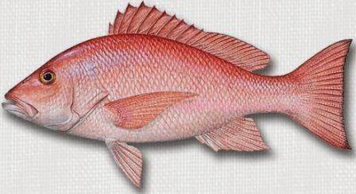

Kakap adalah keluarga ikan laut dasaran yang hidup secara berkelompok di dasar-dasar karang atau terumbu karang. Mempunya ciri tubuh yang bulat pipih dengan sirip memanjang sepanjang punggung. Jenis ikan kakap yang banyak ditemui di Indonesia adalah jenis Kakap merah (L. campechanus) beberapa jenis yang lain yang juga banyak di temui adalah Kakap kuning, Kakap hitam dan lain-lain.
Kakap merah merupakan fauna khas provinsi Kepulauan Riau dikarenakan provinsi ini merupakan tempat tinggal banyak kakap dan kakap sendiri sering dijadikan bahan makanan khas yaitu Asam pedas.